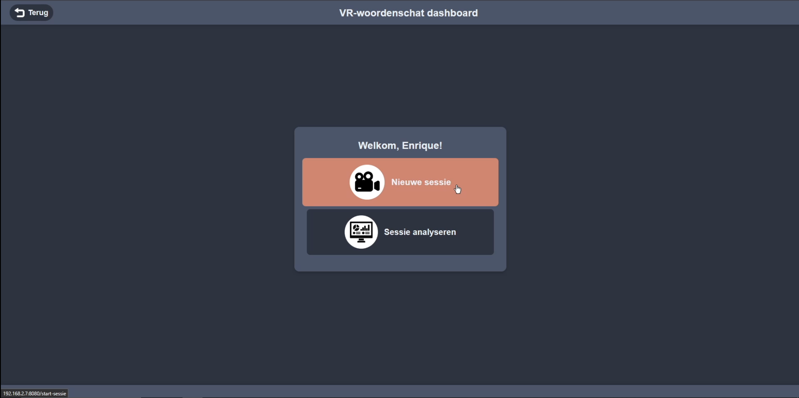
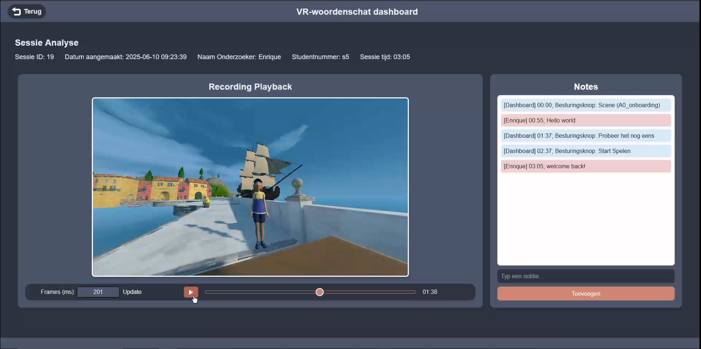
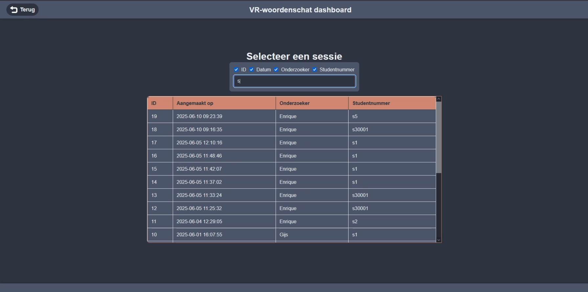
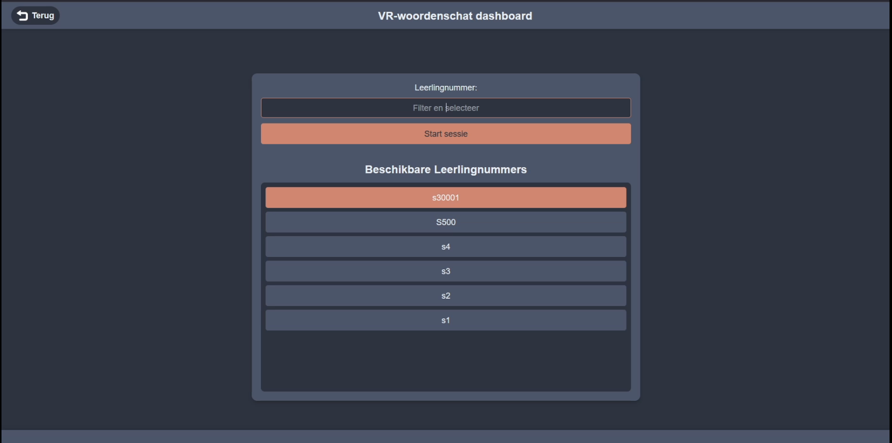
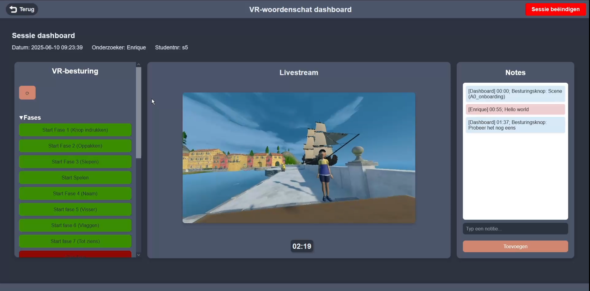
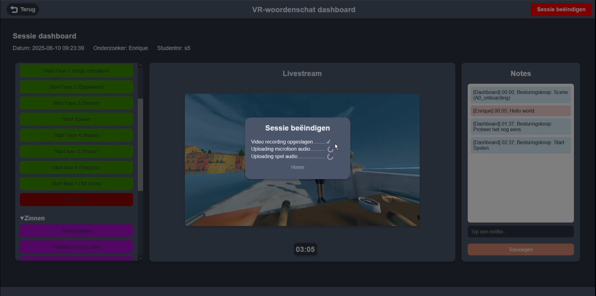

Overview
The Nolai Dashboard was built to centralize team operations, streamline workflows, and provide clear insights. It integrates real-time analytics, automated reporting, and collaboration tools in one platform.
Features
- Dynamic charting and visualization tools.
- API integrations with external services.
- Responsive and accessible design for all devices.
- User role management and permissions.
Challenges & Learnings
The main challenge was balancing performance with scalability. Optimizing data-heavy components taught us efficient state management and API caching strategies.
Gallery





